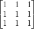
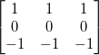
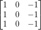
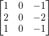

Inhalt |
Die X-Funktion specialflt2 wendet einen vordefinierten Filter auf eine Eingabematrix an. Vordefinierte Filter sind:
Zugriff auf diese Funktion über die Bedienoberfläche:
| Eingabematrix |
Die Eingabematrix |
|---|---|
| Ausgabematrix |
Die Ausgabematrix |
| Spezieller Filter |
Anzuwendender Filter
|
| Auffülloptionen |
Legt fest, wie Zellen außerhalb der Matrixgrenzen aufgefüllt werden.
|
Mitgelieferte Ableitungsfilter:
Durchschnittsfilter:

Filter Prewitt horizontal:

Filter Prewitt vertikal:

Filter Sobel horizontal:
Filter Sobel vertikal:

Beim Anwenden eines Filters auf den Rand der Quellmatrix liegt ein Teil des Filters vielleicht außerhalb der Grenze der Quellmatrix. Sollte dies der Fall sein, kann der Anwender den Bereich außerhalb der Quellmatrix mit Nullen auffüllen (Auffüllen mit Nullen), durch Reflektion auffüllen (Auffüllen durch Spiegelung) oder durch wiederholte Kantenwerte auffüllen (Auffüllen mit Kantenwerten).